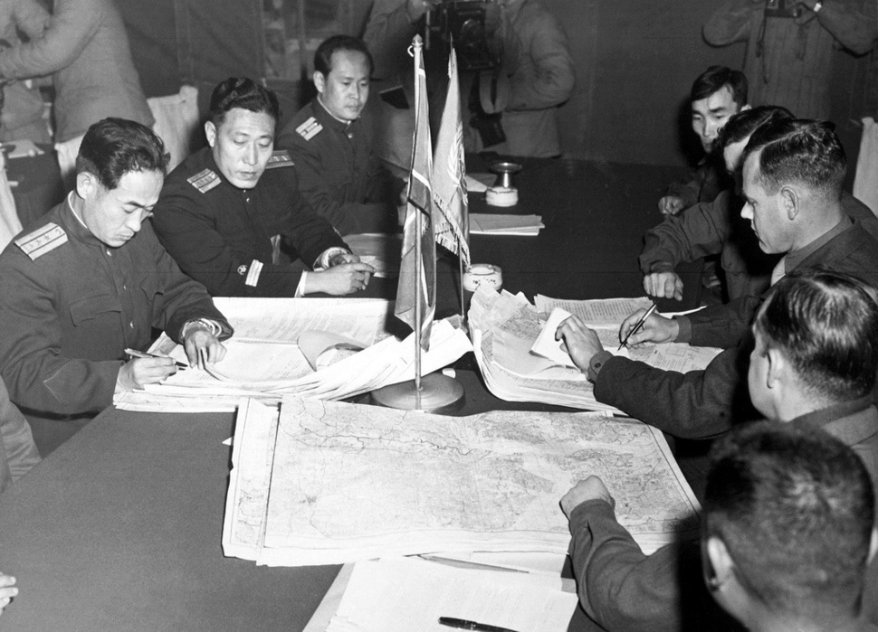
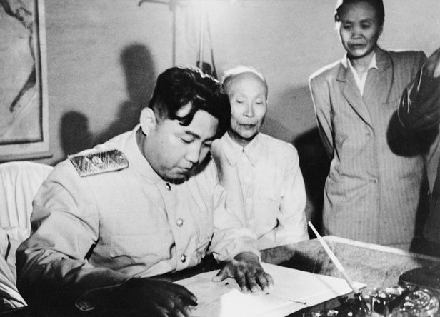
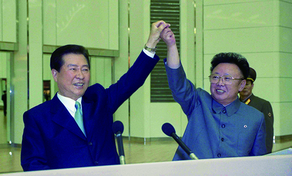
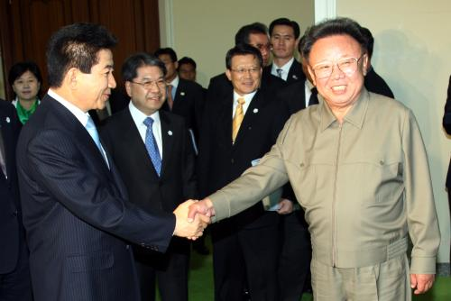
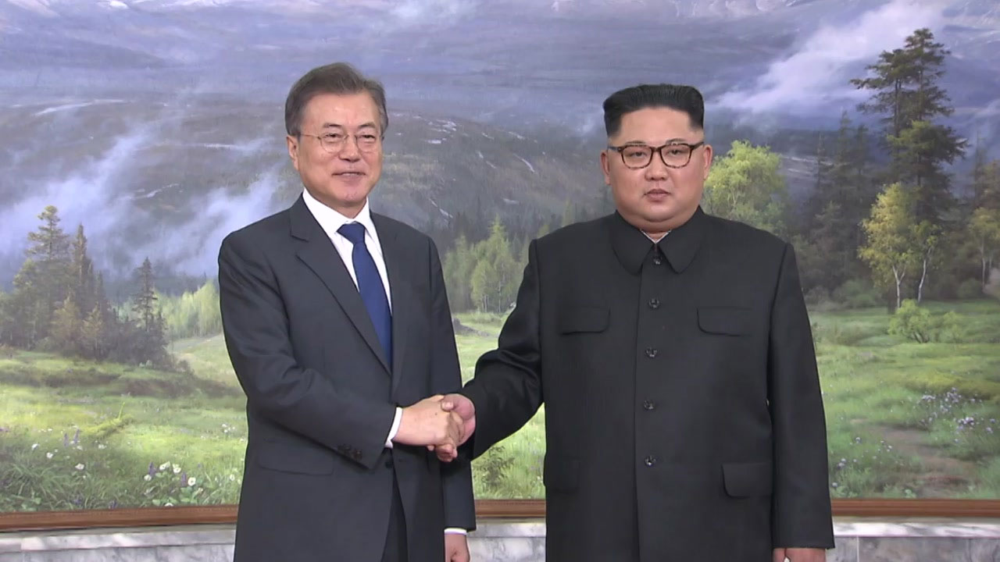

전쟁 이후 남과북
휴전 협정

1951년 10월 11일 판문점에서 열린 휴전 협정
전쟁이 한창이던 1950년, 중공군의 개입으로 남과 북의 전선이 교착화 되자 공산군과 UN군은 더이상의 전쟁은
서로의 피해만 클 뿐더러 더이상의 진전이 보이지 않자 이 전쟁을 끝내야 한다는 것을 깨닫게 됩니다. 그리하여
1951년 7월 10일 양측은 개성시 고려동 내봉장에서 1차 휴전협정이 시작이 됩니다. UN군은 협상의제의 선택, 군사분계선 설정,
휴전 감시 방법 및 그 기구의 설치, 전쟁포로 문제 등 휴전에 선행되어야 할 군사적 문제만을 다루자고 주장합니다. 하지만 공산군측은
쌍방이 적대행위를 중지하고 38도선을 군사분계선으로 설정하는 문제와 한반도에서 외국의 군대 전면철수를 우선적으로 토의해야 한다는
정치적 문제의 주장만을 앞세웁니다. 결국 제대로된 마무리도 없이 협상은 결렬되었고 그후 16일이 지난 7월 26일 비로소 각 진영은
다음과 같은 협상의제와 토의순서를 합의하게 됩니다. 양 진영간 합의된 협상제의는 다음과 같습니다.
- 협상의제의 채택
- 군사분계선의 설정
- 휴전감시방법 및 그 기구의 설치
- 포로교환에 관한 협정
- 양 진영 당사국 정부에 대한 건의
UN과 공산권측은 먼저 군사분계선 문제에 관해 논의를 하였습니다. 1951년 7월 17일날 시작된 군사분계선 논의는 공산권측에서는
다음과 같이 주장합니다. "38도선을 기준으로 군사분계선을 지정해야 한다." 하지만 UN측은 이와는 반대로 현재 접촉면을 군사분계선으로
하자고 주장합니다. 이 두 주장은 팽팽하게 맞서 싸웠는데 결국 UN군측 주장인 현재 접촉면을 군사분계선으로 한다는 주장이 결정됩니다. UN측과 공산권측은
최종협상이 마무리 될때까지 군사작전을 계속한다는 전제하에 회담을 시작했기 떄문입니다. 이로써 1951년 11월 27일 두 진영은 군사분계선의 관한 논의를 마무리 합니다.
군사분계선 협정이 마무리된 다음날 1951년 11월 28일 UN측과 공산권측은 세번째 제의인 휴전감시방법과 그 기구의 설치에 관해 협정을 시작합니다. 해당 협정을 논의하는 동시에
4번째 5번째 제의인 포로문제와 전쟁 당사국 정부에 대한 건의를 병행하여 토의하기로 합니다. 주 합의 내용은 휴전 후 군사력 증강에 대한 규제와
중립국감시위원회 구성에 관한 것이였습니다. 군사력 증강 문제로는 1952년 2월 23일 휴전 후에도 계속 한반도에 주둔할 외국 병력들이 월 3만 5,000명의 병력만이 한반도를 출입할 수
있도록 인정하는 선에서 합의되었습니다. 그러나 중립국감시위원회 구성 문제는 양측의 견해가 팽팽하게 맞서고 있었고 결국 이 문제는 1952년 5월 재개된 협상에서
공산군측이 UN측 발의안을 수락해 공산측은 폴란드 체코슬로바키아, UN측은 스웨덴, 스위스 각각 2개국씩 4개의 중립국으로 휴전감시위원회를 구성하는것으로 합의합니다.
당사국 정부에 대한 건의는 1952년 2월 7일부터 협상이 시작되어 11일 만에 쌍방이 합의하게 되어 협상이 쉽게 종결됩니다.
이때까지만 하더라도 양측은 협상이 쉽게 종결될줄 알았으나 포로처리문제를 둘러싸고 이 회담은 큰 난항을 겪게 됩니다. UN군 측은 포로 개개인의 자유의지에 따라서 원하는 곳을 택하는
'자유송환방식'을 주장하였는데 공산권측은 모든 중공군과 북한군은 무조건 고국에 송환되야 한다는 '강제송환방식'을 주장하였습니다. 이로인해 1952년 2월 27일부터 약 2개월동안 협상은
중단되였음 1952냔 10월 8일 부터는 협상이 무기한 중단되었습니다. UN측 입장에서는 공산군측 입장대로 포르들을 강제송환 한다면 인도주의와 자유주의의 정의를 스스로 포기하는거나 마찬가지였고
공산측 입장에서는 포로 일부가 귀환을 거부하게 될 경우 '외래 침약자들을 무찌르고 남한을 해방시킨다.'라는 그들의 '정의로운 전쟁'이라는 가치가 퇴색되기 때문에 전쟁의 목적에 의구심을 품는자가
생길 수 있다고 생각했습니다. 또한 공산측 세력들이 '자유송환방식'을 거부했던 이유가 1952년 4월 10일 UN군 사령부가 조사한 결과 17만명의 공산군 포로중 10만명이 자유 송환을 원했기 때문인 원인도 있었습니다.
그들은 서로의 주장을 포기할 수 없었습니다. 이들의 협상이 결렬되고 교착상태에 빠질때마다 저멀리 젊은이들은 아직도 전쟁터에서 목숨을 잃고 맙니다.

휴전협정서에 서명을 하고있는 김일성(1953년 7월 27일)
계속해서 교착상태로 빠졌던 휴전 협정은 1953년 3월 5일 스탈린의 사망으로 급속도로 진척이 됩니다. 1953년 4월 16일 공산권측의 요청으로 휴전 협상이 재개되었고
4월 20일부터 포로 교환을 실시합니다. 6월 8일부터는 본국 송환을 거부하는 포로 처리방법에 대해 중립국의 감시아래 처리한다는 방안에 합의를 하게됩니다. 하지만 포로 교환을 실시하던 도중 북한측에서 포로가 된
국군병사들의 숫자가 턱없이 부족했고 이를 이상하게 여긴 국군과 UN측은 사라진 국군포로에 대해서 해명을 요구하고 이들을 귀환 시키려고 노력했지만 결국 공산권측의 거부로 물거품이 되고맙니다. 하지만 더이상
전쟁을 지속할 수 없다고 판단한 양측은 어쩔수 없이 모든 협정을 완료하였고 7월 22일 군사분계선이 확정되고, 7월 23일 비송환 포로들을 비무장지대에서 중립국송환위원단에게 인계하였으며, 7월 27일 마지막으로
판문점에서 휴전협정이 조인됩니다. UN군 수석대표 해리슨 중장과 공산구늑 대표 남일이 휴전협정서와 부속협정서에 각각 서명을 하였고 그 뒤 UN군사령관, 김일성, 펑더화이가 각각 휴전협정에 서명을 하면서
전쟁은 마무리가 됩니다. 비록 대한민국의 대표인 이승만 정권은 마지막까지 이 한반도에 북한군을 몰아내야 한다며 휴전협정에 끝까지 반대하였지만 더이상의 전쟁을 치룰 수 없었던 UN은 이를 결렬시키고 휴전협정에 서명을
하며 전쟁을 마무리 시킵니다. 이로써 1950년 6월 25일 북한의 불법 남침으로 시작된 이 전쟁은 전쟁 개시 3년 1개월 2일만에 정전상태로 잠시 마무리가 됩니다.
남북 정상회담
분단 이후 1953년 전쟁이 정전상태로 들어간 남과 북은 오랜 기간 서로를 견제하고 대립하게 됩니다. 하지만 계속해서 대립상태를 유지할 수 없던 남과 북은 정상간의 만남을 통해 정치적으로 신뢰를 형성할 필요를
느낌에 따라 1970년부터 남북 정상호담 개최를 위해 노력을 하게됩니다. 1980년 1월 12일 정상회담을 위한 당국자간 만남을 시작으로 1994년 7월 정상회담 개최일을 합의하게 되나 김일성의 사망으로 무산되고 2000년 6월
첫 만남을 가지게 됩니다.
제 1차 정상회담

제 1차 정상회담의 경우 2000년 3월 9일 김대중 대통령의 '베를린 선언' 이후 남북한은 정상회담 개최에 합의하고 4월 10일 서울과 평양에서 동시에 정상회담 개최 일정을 발표합니다. 회담 일정은 양측 합의 후에 6월 13일로
지정하고 6월 15일까지 2박 3일동안 회담은 진행이 됩니다. 6월 13일 김대중 대통령은 평양국제비행장을 통해서 평양을 방문해 김정일과 회담을 시작하게 됩니다. 이는 한반도 분단 이후 처음으로 양 측 대표가 처음으로 만나게
된날로 김정일이 직접 공항으로 마중나와, 조선인민군 의장대의 사열과 분열까지 거행이됩니다.
회담 마지막 날에는 6.15 남북 공동선언을 발표하는데 남과 북이 전쟁을 포기하고 통일 문제를 대화로 해결한다는 조약으로 한반도 평화체제 구축의 신호탄이 됩니다. 이후에도 남북은 장관급회담을 비롯한 다양한 분야에서의 회담을
활발히 진행하였고 교류협력 활성화의 시작이 열리게 됩니다.
제 2차 정상회담

2000년
'2.13 합의' 이후 북핵문제의 진전이 가시화되면서 남북관계도 여러 분야에서 긍정적인 면으로 속도를 내기 시작합니다.
김만복 국정원장은 대통령 특사자격으로 북한을 방문해 8월 28일부터 30일까지 제 2차 정상회담을 평양에서 개최한다는것에 합의를 합니다. 하지만 북한의 수해로 인해 10월 2일에서 4일까지로
연기가 됩니다. 10월 2일 노무현 대통령은 총 300명으로 구성된 대표단들과 함께 육로를 통해 북한을 방문하였고, 10월 3일 두 차례의 정상회담 논의를 통해서 10월 4일 남북관계 발전과 평화번영을 위한
'10.4 남북공동선언'을 발표합니다. 양 측은 '6.15 공동선언'의 정신을 재확인하고 남북관계발전과 한반도 평화, 민족공동의 번영과 통일을 실현하도록 협의를 하게됩니다.
제 3차 정상회담

2017년 6월 24일 문재인 대통령은 무주 WTF세계 태권도 선수권 대회 축사에서 북한의 평창동계올림픽 참가를 첫 제안으로, 8월 15일 제 75주년 광복절 경축사에서 문재인 대통령은 평창동계 올림픽을 남과 북이 함께 하는 올림픽으로 만들어야 한다고
연설을 합니다. 2018년 1월 북한 김정은은 평창동계올림픽 대표단 파견 및 대화 용의를 표명합니다. 2018년 1월 2일 통일부 장관은 남북당국회담 개최를 북한에 제의하였고 북한은 남한의 제안에 동의를 합니다. 2월 9일 평창동계올림픽 개막식에서 남북 선수단이
공동입장을 하였고 2월 10일 북한 김여정 특사는 문재인 대통령에게 대통령 방북 초청 친서를 전달합니다. 이에 3월 5일 대북특별사절단이 평얄을 방문해 김정은과 면담을 하게됩니다. 3월 6일 대북특별사절단은 4월말 남북정상회담 판문점 개최를 발표하였고
3월 29일 남북정상회담을 위한 남북고위급회담이 판문점 북측지역 통일각에서 개최됩니다. 4월 5일, 7일 남북 실무회담이 판문점에서 개최되었고 4월 27일 제 3차 남북정상회담이 개최됩니다. 회담의 결과물로는 '판문점선언'을 발표하였는데 주 내용은 다음과 같습니다.
- 북한의 완전한 비핵화 및 핵 없는 한반도 실현
- 문재인 대통령 평양 방문 및 회담 정례화
- 남북공동연락사무소 개성지역 설치 및 쌍방 당국자 상주
- 모든 적대행위 중지 및 비무장 지대를 평화지대로 구축
- 8.15 이산가족 상봉
- 동해선 및 경의선 철도와 도로 연결
북한의 도발
북한의 화전 양면술
국지 도발
핵 무장 및 미사일 무력 시위
참고자료
기록으로보는 남북 회담
한국민족문화대백과사전